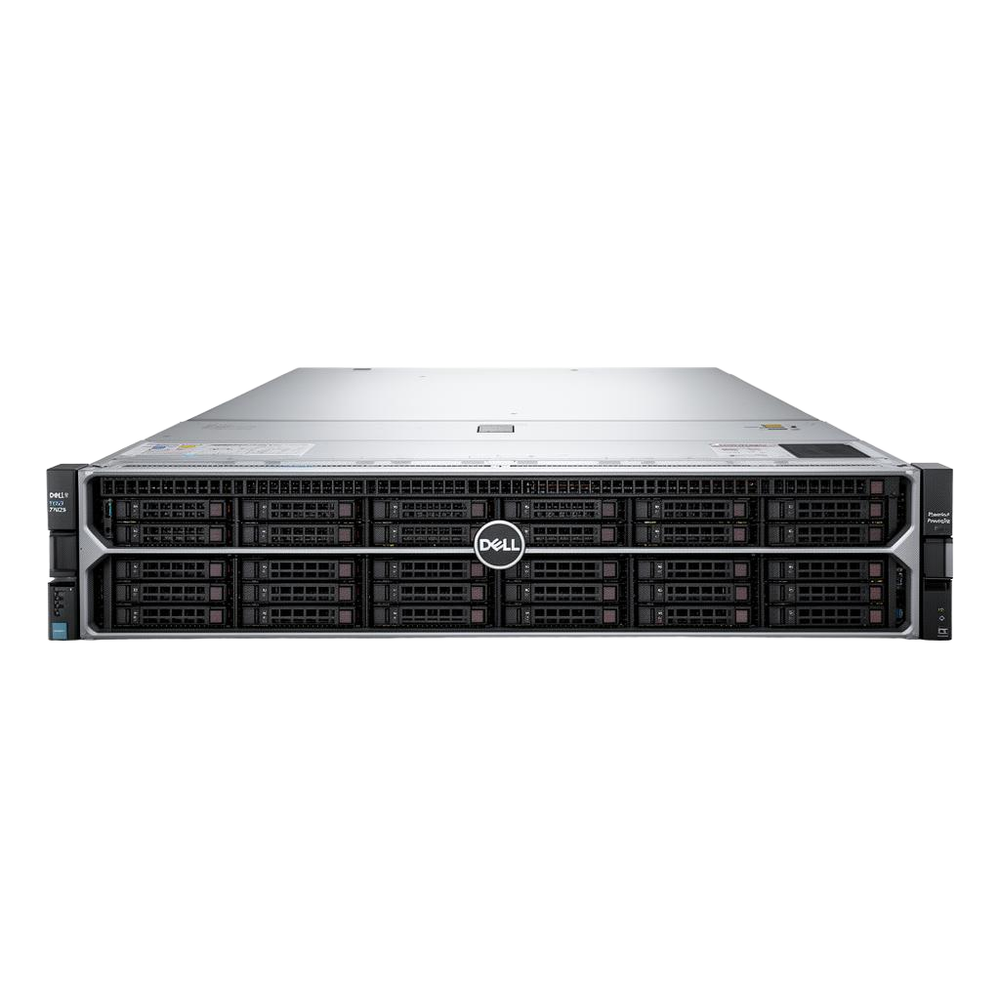

CPU-only inference · No GPUs
What does it take to give
What does it take to give
1,500 people AI?
Less hardware than you would guess. We load-tested two Dell PowerEdge servers running a 30-billion-parameter open model on CPU alone, using simulated office workers with realistic request patterns. Both tests used the same model and the same workloads. Choose a platform to follow the numbers.
Intel Xeon 6 · AMX

Dell PowerEdge R470
Single-socket Intel Xeon 6 with AMX acceleration; suits a group of 1,200–2,000 people.
Xeon 6 6761P · 64 cores · 1 TB DDR5 · 1U
32 simultaneous users measured within response targets
~$30K tested configuration
View the Intel results →
AMD EPYC · Zen 4

Dell PowerEdge R7625
Dual-socket AMD EPYC with one engine per socket; suits a group of 2,000–3,200 people.
2× EPYC 9374F · 64 cores · 1 TB DDR5 · 2U
64 simultaneous users measured within response targets
~$40K tested configuration
View the AMD results →